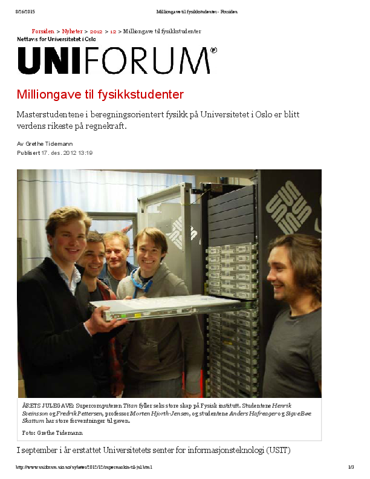
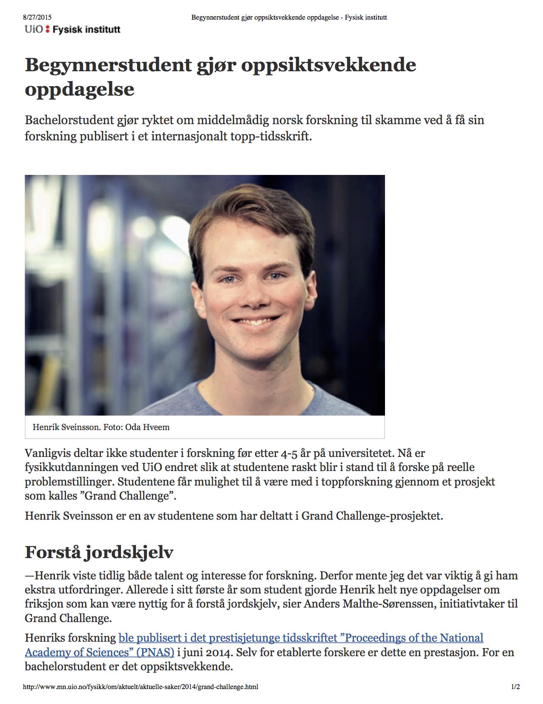
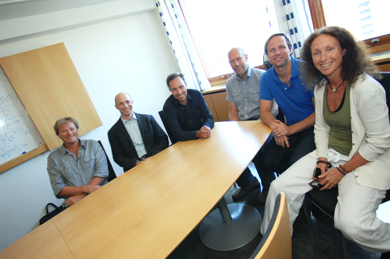

Education for the future
September 2 2015,
Present and future education
- Research-based education, from undergraduate studies to a PhD: The Computational Physics group at the University of Oslo as example
- Future challenges and directions
Excellent research mutually depends on excellent education.
The role of computations, from education to society
Computations are central to our basic understanding of nature and to technological advances. UiO's strength in computational science (education and research) has the potential to make UiO a top European university.
- Nanotech and Materials: quantum physical systems in nanotechnology; characteristics of new materials; semi-conductor devices and quantum computers
- The smallest particles in nature: subatomic physics at its smallest length scale
- And the largest: simulating galaxies and the evolution of the universe
- Life science: cancer treatment and how the brain works
- Geosciences: predicting climate changes and this week's weather, simulating natural disasters
- Finance: assessing risk in the insurance and financial industry
- and many many more
Modeling and computations as a way to enhance algorithminc thinking
Algorithm : A set of instructions to solve a problem.
- Enhances instruction-based teaching
- Introduces research-based teaching from day one
- Triggers further insights in scientific problems
- Emphasizes validation and verification of scientific results, and integrates science ethics in a natural way
- Ensures good working practices from day one!
What does computing mean?
Computing means solving scientific problems using computers. It covers numerical as well as symbolic computing. Computing is also about developing an understanding of the scientific process by enhancing the algorithmic thinking when solving problems.
- derivation, verification, and implementation of algorithms
- understanding what can go wrong with algorithms
- overview of important, known algorithms
- understanding how algorithms are used to solve complicated problems
- reproducible science and ethics
- algorithmic thinking for gaining deeper insights about scientific problems
All these elements (and many more) aid students in maturing and gaining a better understanding of the scientific process per se.
Computing and research-based education
A computational approach allows us to introduce research concepts and engage students in research from day one.
- Theory + experiment + simulation is the norm in research and industry
- Modeling of real, complex systems with no simple answers
- Insight and understanding of fundamental principles and laws
- Visualization, presentation, discussion, interpretation, and critical analysis of results
- Development of a sound ethical attitude to own and other's work
- Enhanced reasoning about the scientific method
- Individually tailored education in order to let students realize their full potentials and discover their creative powers
This is what we do in the Computational Physics group at UiO!
Computational Physics group at UiO; our visions
|
Physics students can pose and solve problems that combine physical insights with mathematical tools and now also computational skills. This provides a unique combination of applied and theoretical knowledge and skills. These features are invaluable for the development of multi-disciplinary educational and research programs. |
|
A social and scientific learning environment
Goal: Students should realize their full potentials and discover their creative powers
- Students come with different dreams, ambitions, aspirations and topics they wish to study, our approach is to tailor the education to all these aspects
- Our motto: foster students who are better than their supervisors
- Emphasis is on learning and getting new insights
- Students and teachers help each other
- Students with different backgrounds and needs can thrive socially and scientifically
- Not a competitive environment, but a drive and enthusiam for sharing and developing knowledge. This is an important element for the success of for example multi-disciplinary projects
We develop a social and scientific learning environment
- We target bachelor, MSc and PhD students
- Project-oriented work where students develop and mature their own ideas, with an individually tailored approach to each student
- Office space with desktops to every student and large common room for recreational activities (meals, gaming, movies)
- Many students collaborate on similar thesis topics and publish in top scientific journals
Features of the Computational Physics group
- Our students have made significant contributions to the Computing in Science Education (UiO education prize in 2011) by developing exercises and participating in educational projects at the MN faculty
- Our students have also developed educational tools and applications for understanding complicated physical problems
- A group of PhD students is now developing new textbooks for Computational Life Science
- 2005-2015: \( > 60 \) students have finalized their master's theses and 60% have continued with PhD studies
- Many students don't want to leave the group after finishing their studies
Investing in equipment for research and education
|
Large screens for visualizing and presenting scientific results. And gaming and other social activities.
|
|

Building a local supercomputing cluster from titan.uio.no
|
Our supercomuting cluster.
When UiO's previous supercomputing cluster (titan.uio.no) was replaced by abel.uio.no, we got 200 nodes for free from USIT and built our own supercomputer. The value in 2006 of all the equipment was close to eight MNOK.
|
 |
Undergraduate student publishes in PNAS
|
Participating in research from day one!
|
 |
Multiscale modeling is the big open research question in the 21st century
- Present and future problems, unlike traditional science and engineering, involve complex systems with many distinct physical processes
- The wide open research topic of this century, both in industry and at universities, is how to effectively couple processes across different length and energy scales
- Progress will rely on a multi-disciplinary approach
We need to foster candidates with the right multi-disciplinary background and computational thinking!
The future: A new type of students
Computations will play a central role in almost all aspects of scientific investigations and technological innovation
Candidates who are capable of modeling and understanding complicated systems, are in short supply in society.
We need students that
- can handle large and demanding multi-disciplinary projects. This requires structured thinking and good analytical skills and a thorough understanding of the problems to be solved
This knowledge makes the students unique on the labor market, a labor market which in the years to come will experience heavy automatization and massive loss of jobs.
This will lay the foundation for cross-disciplinary educational, research and innovation activities.
Create the Department for Computational Science!
UiO's strength in computational science (education and research) has the potential to make UiO a top European university
- Establish a new center/department with focus on computational science and its applications to a wide range of fields (natural science, medicine, social sciences, humanities, applied research etc)
- Hire ten young professors (age \( < 40 \)) dedicated to innovative computational research and education
- Establish another ten professorships with shared positions between the new department and the discipline-specificdepartment (physics, chemistry, ...)
The process must start now in order not to lose momentum.
Our takeaway messages
- Computing plays and will play an even more important role in future scientific and technological advances
- A successful research program cannot be disconnected from education and vice versa
- An educational and research program which focuses on these issues needs to be established as soon as possible
- Key goal: students must realize their own potentials and creative power
Computational Physics and the Computing in Science Education project (UiO educational prize in 2011)
The results, insights, ideas and thoughts presented here, would have been impossible without the continuous interaction with colleagues in the Computing in Science Education project.
|
 |